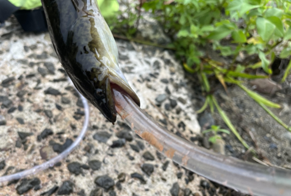
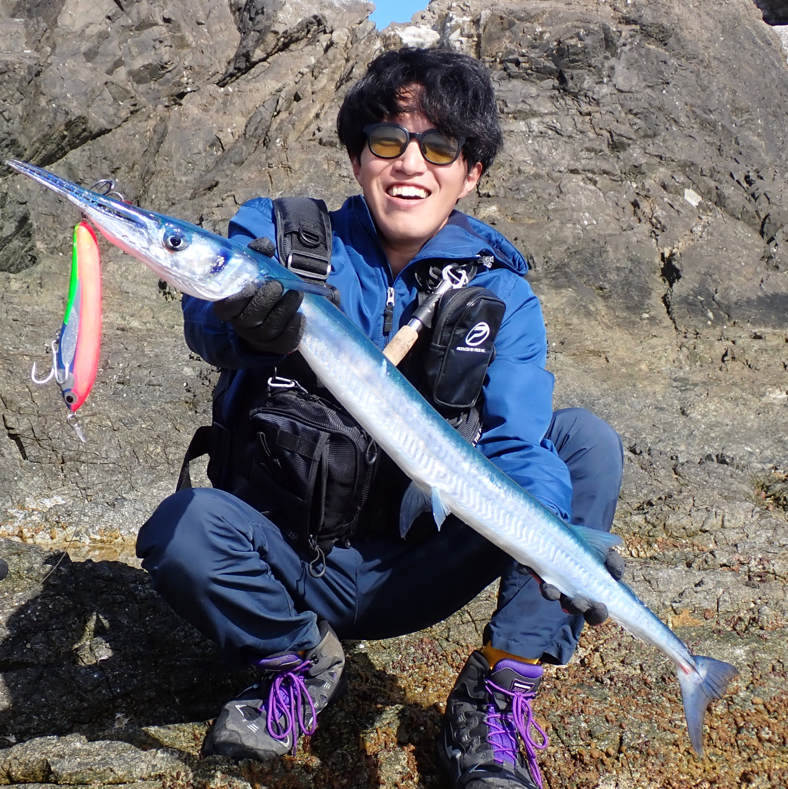
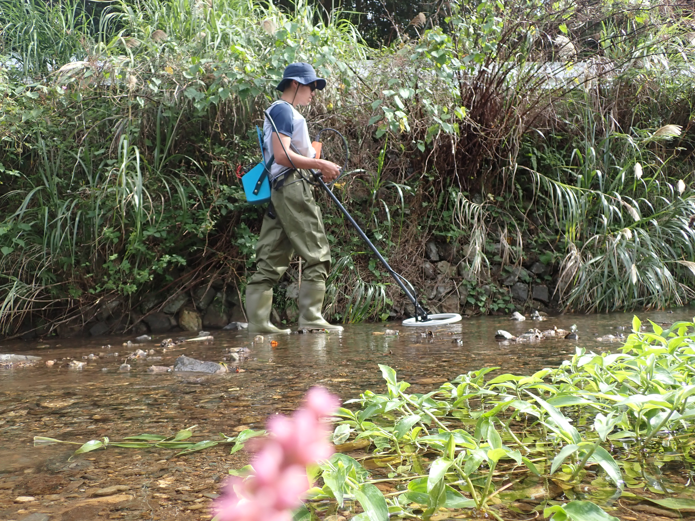

ウナギを傷つけない調査手法の確立
オオウナギの胃内容物をチューブと鉗子（ペンチのような道具）を使って殺さずに胃内容物を採取する手法を確立しました。
奄美大島でオオウナギの研究をしています。

東京大学 農学生命科学研究科 博士課程
東京大学 大気海洋研究所 生物海洋学グループ
生態系の構造や相互作用に興味があります。
ウナギ属だけでなく幅広い水生生物が好きです。
博士課程では奄美大島に引っ越して、オオウナギを追いかけていました。
オオウナギの河川生態を中心に、調査中に採集された生物の分布記録も報告していきます。

オオウナギの胃内容物をチューブと鉗子（ペンチのような道具）を使って殺さずに胃内容物を採取する手法を確立しました。

ウナギが離れた場所に移送した後、元の場所に戻ってくる行動を追跡し、その回帰行動の特徴を明らかにしました。
東京大学 大気海洋研究所 生物海洋学グループ
〒277-8564 千葉県柏市柏の葉5-1-5
tatauhikomaeda707[at]gmail.com